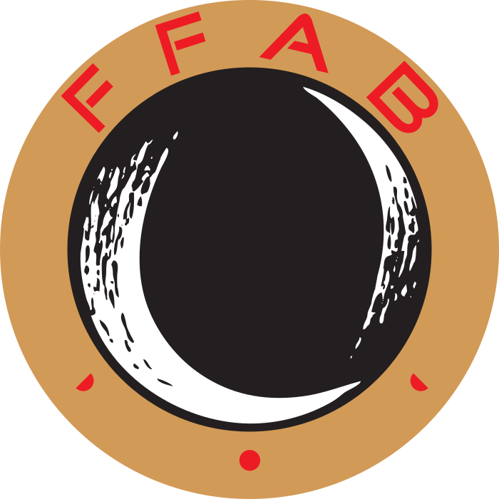
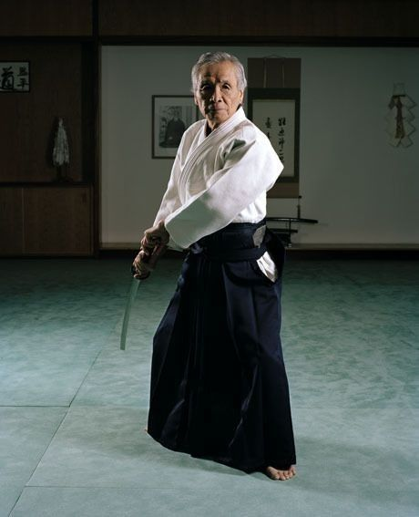

Fédération française d'aïkido et de budo
Origines de la fédération

La FFAB qui s'est organisé autour de Tamura Sensei, Élève du fondateur de l'Aikido, compte plus de 30000 licenciès.
Nobuyoshi TAMURA"

Nobuyoshi TAMURA Shihan est né le 1 mars 1933 à Osaka (Japon). Issu d'une famille de maîtres d'armes, il commence très tôt la pratique des arts martiaux pour finalement devenir l'un des disciples les plus proches de O Senseï Moriheï Ueshiba, fondateur de l'Aikido. Depuis 1964, date à laquelle il s'établit en France, il est le délégué de l'Aikikai pour l'Europe. Son éfficacité hors du commun marlgré une frêle silhouette, provoque chez tous ceux qui l'approchent un profond respect. Le classicisme de sa technique est apprécié dans le monde entier, de même que sa façon de l'enseigner : avec cœur et justesse. Nul autre ne pouvait tracer de voie plus authentique dans la transmission de l'Aikido en tant qu'art noble et élevé.